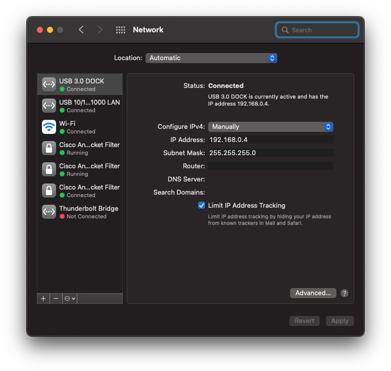
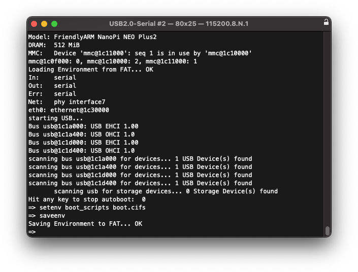

Environnement Linux embarqué / Travaux pratiques
Objectifs
Ce travail pratique vise les objectifs suivants :
- Mise en œuvre d’un système embarqué sous Linux
- Mise en œuvre de l’environnement de développement de systèmes embarqués sous Linux avec Docker
- Debugging d’applications sous Linux embarqué
- Mise en production d’un système embarqué sous Linux
Activités
Il comprendra les activités suivantes :
- Mise œuvre de l’environnement de développement sous Linux (avec Docker)
- Installation de la machine hôte
- Création de l’espace de travail sur la machine hôte
- Génération de l’environnement de développement (toolchain, U-Boot, Linux kernel, rootfs)
- Mise en œuvre de l’infrastructure (cible, machine hôte)
- Mise en place de l’infrastructure
- Gravure (burning) de la carte SD pour la cible
- Test de l’environnement de production sous carte SD
- Test de l’environnement de développement sous cifs (smb)
- Debugging d’une application simple depuis la machine hôte
- Génération d’une application sur la machine hôte
- Lancement de l’application sur la cible
- Debugging de l’application avec VS-Code et SSH
- Mise en production
- Génération d’une application
- Génération du rootfs avec l’application
- Test et validation du produit
Informations pratiques
Ce paragraphe donne quelques informations utiles pour la réalisation de ce travail pratique.
Installation de la machine hôte (votre PC)
Pour les exercices, nous utilisons des conteneurs Docker. Si vous n’avez pas encore installé Docker Desktop, téléchargez-le depuis le site officiel de Docker et installez-le.
Installez git sur votre machine si ce n’est pas déjà fait. Configurez aussi l’utilisateur de git:
git config --global user.name "User Name"
git config --global user.email user.name@master.hes-so.ch
Note
Sur les machines Windows, il est encore nécessaire de configurer Git pour qqu’il utilise le “line ending” de Linux (\n),
car les scripts “bash” n’autorisant pas le “line ending” DOS (\r\n).
git config --global core.autocrlf false
Installez aussi Visual Studio Code si ce n’est pas déjà fait.
Création de l’espace de travail (workspace) sur la machine hôte personnelle
Avec notre browser, rendez vous sur le dépôt csel-workspace et faites un fork dans l’espace de travail personnel de github d’un membre du groupe.
Ajoutez les autres membres du groupe avec le rôle “Write”, “Maintain” ou “Admin”. Ajouter aussi le(s) professeur(s) avec au minimum le rôle “Triage”.
Chaque membre de l’équipe peut maintenant faire un “Clone” du projet csel-workspace sur son ordinateur.
Configuration de l’environnement de développement
Ouvrez le projet avec VSCode. Le système vous demandera probablement si vous faites confiance aux auteurs de ce dossier et vous pouvez cliquer sur le bouton correspondant.
Si le système vous propose de ré-ouvrir le dossier dans un container, acceptez cette proposition en cliquant sur “Reopen in Container”
Lorsque vous ouvrez le projet avec VSCode, le système vous proposera probablement d’installer des extensions. Acceptez-les toutes et cliquez sur le bouton “Install”.
Ouvrez maintenant un terminal dans VSCode et téléchargez “buildroot” avec la commande suivante:
get-buildroot.sh
Pour votre culture génlrale, étudiez le script get-buildroot.sh dans /usr/local/bin/.
Génération et installation de l’environnement
Vous pouvez modifier la configuration du noyau ou du rootfs avec la commande suivante :
cd /buildroot
make menuconfig
cd /buildroot
make
Attention
La construction du système prend entre 30 et 60 minutes selon la performance de votre PC. Assurez-vous aussi d’avoir au moins 20GiB de libre sur votre disque dur (ou ssd).
Actualisez maintenant le “root filesystem”:
rm -Rf /rootfs/*
tar xf /buildroot/output/images/rootfs.tar -C /rootfs
Note
Vous pouvez aussi utiliser les script /usr/local/bin/delete-rootfs.sh
et /usr/local/bin/extract-rootfs.sh présents dans l’image Docker.
Gravure de la carte SD
Avant de pouvoir graver la carte SD, vous devez copier les images dans le répertoire synchronisé avec votre ordinateur.
Vous pouvez utiliser la commande rsync :
rsync -rlt --progress --delete /buildroot/output/images/ /workspace/buildroot-images
Note
Vous pouvez aussi utiliser le script /usr/local/bin/sync-images.sh présent dans l’image Docker.
Pour graver la carte SD, utilisez le logiciel Balena Etcher.
Insérez la carte SD dans votre ordinateur, sélectionnez l’image buildroot-images/sdcard.img, sélectionnez le disque qui correspond
à votre carte SD et cliquez sur “Flash!”.
Pour tester la bonne gravure de la carte SD, il suffira de l’installer sur la cible et de la redémarrer. On pourra voir la séquence de lancement (boot sequence) sur la console avec un client “terminal série” installé sur l’hôte. Vous pouvez utiliser par exemple:
Voici ce que vous devriez voir sur la console :
Lorsque la séquece de boot termine, vous pouvez vous connecter avec le login root :

Mise en place de l’infrastructure réseau
Pour simplifier le développement et la réalisation des différents travaux pratiques de ce cours, il est recommandé de configurer l’ensemble de l’infrastructure réseau avec des adresses IP statiques. On utilisera de préférence, l’adresse IP 192.168.0.14 pour la cible et l’adresse IP 192.168.0.4 pour la machine hôte de développement.
L’image de la cible est déjà configurée avec l’adresse 192.168.0.14. Configurez maintenant l’adaptateur Ethernet de votre PC (ou un adaptateur Ethernet/USB) avec l’adresse IP fixe 192.168.0.4 :

Note
Si vous travaillez avec Windows, vous devez encore configurer le firewall pour permettre les connexions provenant du réseau 192.168.0.0/24.
Reliez l’adaptateur Ethernet de votre PC avec la cible à l’aide du câble Ethernet et, depuis une console de votre PC, testez la connexion :
ping 192.168.0.14
Vous devriez obtenir quelque chose comme ça:
PING 192.168.0.14 (192.168.0.14): 56 data bytes
64 bytes from 192.168.0.14: icmp_seq=0 ttl=64 time=2.933 ms
64 bytes from 192.168.0.14: icmp_seq=1 ttl=64 time=0.832 ms
64 bytes from 192.168.0.14: icmp_seq=2 ttl=64 time=0.783 ms
64 bytes from 192.168.0.14: icmp_seq=3 ttl=64 time=0.751 ms
64 bytes from 192.168.0.14: icmp_seq=4 ttl=64 time=0.845 ms
Si vous obtenez le résultat ci-dessous, c’est que la connexion ne passe pas :
PING 192.168.0.14 (192.168.0.14): 56 data bytes
ping: sendto: Host is down
Request timeout for icmp_seq 0
ping: sendto: Host is down
Request timeout for icmp_seq 1
ping: sendto: Host is down
Request timeout for icmp_seq 2
ping: sendto: Host is down
Request timeout for icmp_seq 3
Connectez-vous maintenant à la cible depuis votre PC par SSH:
ssh root@192.168.0.14
Note
Si la clé SSH de la cible a changé, vous verrez quelque chose comme ça:
@@@@@@@@@@@@@@@@@@@@@@@@@@@@@@@@@@@@@@@@@@@@@@@@@@@@@@@@@@@
@ WARNING: REMOTE HOST IDENTIFICATION HAS CHANGED! @
@@@@@@@@@@@@@@@@@@@@@@@@@@@@@@@@@@@@@@@@@@@@@@@@@@@@@@@@@@@
IT IS POSSIBLE THAT SOMEONE IS DOING SOMETHING NASTY!
Someone could be eavesdropping on you right now (man-in-the-middle attack)!
It is also possible that a host key has just been changed.
...
Dans ce cas, effacez les entrées dans votre fichier known_hosts avec
la commande suivante:
ssh-keygen -R 192.168.0.14
et essayez à nouveau.
Si tout va bien, vous verrez un message du genre :
The authenticity of host '192.168.0.14' can't be established.
ED25519 key fingerprint is SHA256:...
This key is not known by any other names
Are you sure you want to continue connecting (yes/no/[fingerprint])?
Entrez yes et pressez Enter
Vous êtes maintenant connecté! Tapez la commande uname -a pour voir le système d’exploitation de la cible :
# uname -a
Linux csel 5.15.21 #1 SMP PREEMPT Sat Feb 12 19:26:27 UTC 2022 aarch64 GNU/Linux
Mise en place de l’espace de travail (workspace) sous CIFS/SMB
Il est possible d’augmenter le confort de travail et l’efficacité en attachant l’espace de travail de la machine de développement hôte directement sur la cible. Ceci permet en effet d’accéder directement depuis la cible les fichiers et applications générés sur la machine hôte, évitant ainsi des copies inutiles de fichiers. Il est possible d’attacher l’espace de travail soit manuellement soit automatiquement.
Pour attacher manuellement l’espace de travail de la machine hôte sur la cible via CIFS/SMB, il faut :
- Se logger sur la cible (username : « root » et password : lasser vide)
- Créer la première fois un point d’attachement sur la cible :
mkdir -p /workspace - Attacher le workspace de la machine hôte sur la cible :
mount -t cifs -o vers=1.0,username=root,password=toor,port=1445,noserverino //192.168.0.4/workspace /workspace - Détacher le workspace de la cible :
umount /workspace
Pour attacher automatiquement l’espace de travail de la machine hôte sur la cible via CIFS/SMB, il suffit d’effectuer une seule fois les instructions ci-dessous :
- Créer la première fois un point d’attachement sur la cible, p. ex. :
mkdir -p /workspace - Editer le ficher “/etc/fstab” (avec vi) et ajouter la ligne ci-dessous :
//192.168.0.4/workspace /workspace cifs vers=1.0,username=root,password=toor,port=1445,noserverino - Activer la configuration :
mount -a
Génération d’applications sur la machine de développement hôte
Pour la génération d’applications sur la machine hôte (compilation croisée),
il est recommandé de développer ces propres Makefile.
Quelques infos utiles pour trouver la toolchain et éditer le Makefile :
# Makefile toolchain part
TOOLCHAIN_PATH=/buildroot/output/host/usr/bin/
TOOLCHAIN=$(TOOLCHAIN_PATH)aarch64-linux-
# Makefile common part
CC=$(TOOLCHAIN)gcc
LD=$(TOOLCHAIN)gcc
AR=$(TOOLCHAIN)ar
CFLAGS+=-Wall -Wextra -g -c -mcpu=cortex-a53 -O0 -MD -std=gnu11
Debugging de l’application sur la cible (VS-Code)
Le debugging d’application peut être effectué de deux manières :
- directement sur la cible avec “gdb”
- à distance en utilisant un “gdbserver” sur la cible et “gdb” sur la machine hôte
Cette dernière option offre l’avantage de pouvoir utiliser VS-Code.
Visual Studio Code avec ses extensions et les “multi-root workspaces” offre une interface très simple et un debugger de qualité pour le debugging de vos applications. Pour configurer VS-Code, il suffit trois fichiers:
- Un fichier “workspace”
- Un fichier “task”
- Un fichier “launcher”
Ces fichiers sont déjà configurés dans votre workspace.
Les fichiers “task” (task.json) et “launcher” (launch.json) se trouvent du répertoire .vscode de chaque projet, soit dans les répertoires /workspace/src/samples/tp.01/debug/.vscode et /workspace/src/samples/tp.01/coredump/.vscode.
Mise en place de l’environnement pour le développement du noyau sous CIFS/SMB
Pour le développement de modules et de pilotes de périphériques devant fonctionner dans le noyau Linux, il est généralement plus commode de charger le noyau de la machine hôte sur la cible et d’accéder le rootfs fraîchement généré ou modifié directement via le réseau.
Pour ce faire, il faut créer un nouveau fichier de configuration (p.ex. boot.cifs) pour l’U-Boot, et le copier sur la carte SD dans la partition vfat boot. Pour créer ce fichier, il faut tout d’abord éditer un fichier avec les variables et commandes nécessaire à l’U-Boot :
- Créer un dossier
boot-scriptsdans le workspace - Ouvrir/créer le fichier de commandes
boot_cifs.cmdet l’ouvrir avec VS-Code - Entrer le contenu suivant :
setenv myip 192.168.0.14 setenv serverip 192.168.0.4 setenv netmask 255.255.255.0 setenv gatewayip 192.168.0.4 setenv hostname myhost setenv mountpath rootfs setenv bootargs console=ttyS0,115200 earlyprintk rootdelay=1 root=/dev/cifs rw cifsroot=//$serverip/$mountpath,username=root,password=toor,port=1445 ip=$myip:$serverip:$gatewayip:$netmask:$hostname::off fatload mmc 0 $kernel_addr_r Image fatload mmc 0 $fdt_addr_r nanopi-neo-plus2.dtb booti $kernel_addr_r - $fdt_addr_r - Ecrire aussi le
Makefilesuivant:boot.cifs: boot_cifs.cmd mkimage -T script -A arm -C none -d boot_cifs.cmd boot.cifs - Dans un terminal, entrer dans le dossier
boot-scriptset taper la commandmakeVous devriez obtenir le fichierboot.cifsdans le dossierboot-scripts - Copier le fichier
boot.cifssur la partition vfatbootde la carte SD - Redémarer la cible et l’arrêter dans l’U-Boot (en pressant une touche au démarrage) et changer le script de démarrage de la cible
avec la commande
setenv boot_scripts boot.cifs. Si vous souhaitez conserver cette configuration, taper également la commandesaveenv - Relancer le système / redémarrer la cible (avec la commande
boot)
Lors du premier démarrage sur le réseau, la cible va générer de nouvelles clés SSH et c’est possible que les permissions de ces clés soient mal configurées. Vous verrez alors des messages de ce genre sur la console:
@@@@@@@@@@@@@@@@@@@@@@@@@@@@@@@@@@@@@@@@@@@@@@@@@@@@@@@@@@@
@ WARNING: UNPROTECTED PRIVATE KEY FILE! @
@@@@@@@@@@@@@@@@@@@@@@@@@@@@@@@@@@@@@@@@@@@@@@@@@@@@@@@@@@@
Permissions 0666 for '/etc/ssh/ssh_host_<NAME>_key' are too open.
It is required that your private key files are NOT accessible by others.
This private key will be ignored.
Connectez-vous alors sur la console (root) et tapez la commande suivante:
chmod go= /etc/ssh/*_key
Redémarrez avec un reboot et vérifiez que vous pouvez maintenant vous connecter avec SSH.
Travail
- Installez l’environnement de développement sur la machine hôte, selon les instructions ci-dessus, et configurez la cible en mode de développement avec CIFS/SMB.
- Installez/configurez SSH pour un accès à distance.
- Créez un script permettant de générer la carte SD.
- Testez les différentes méthodes et techniques de débogage proposées par l’environnement Linux. Pour cela, générez les exemples fournis dans le répertoire “~/workspace/csel1/environment” en suivant les indications des slides. Ces fichiers se trouvent également sous Moodle.
- Créez une partition ext4 avec l’espace restant sur la carte SD (avec les commandes
fdisk /dev/mmcblk2etmkfs.ext4) et montez ce répertoire sous/opt. Démarrez ensuite automatiquement (mode production) un petit programme que vous aurez préalablement placé dans/opt. - Répondez aux questions
Questions
- Comment faut-il procéder pour générer l’U-Boot ?
- Comment peut-on ajouter et générer un package supplémentaire dans le Buildroot ?
- Comment doit-on procéder pour modifier la configuration du noyau Linux ?
- Comment faut-il faire pour générer son propre rootfs ?
- Comment faudrait-il procéder pour utiliser la carte eMMC en lieu et place de la carte SD ?
- Dans le support de cours, on trouve différentes configurations de l’environnement de développement. Qu’elle serait la configuration optimale pour le développement uniquement d’applications en espace utilisateur ?